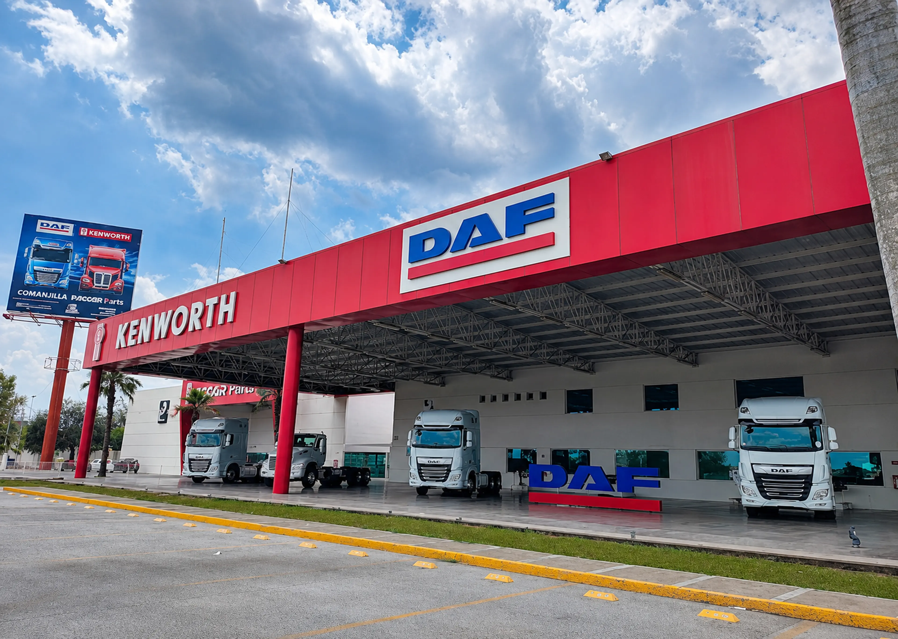

GPS ACTIVO

DESDE 1967
UNA HISTORIA QUE
SIGUE MOVIENDO A MÉXICO
Más que camiones.Impulsamos historias.
Somos una red de personas, soluciones y tecnología dedicada a mantener en movimiento a quienes hacen crecer nuestro país.
5Estados conectados
1967Inicio de operaciones
360°Unidades · Refacciones · Servicio
01 / QUIÉNES SOMOS
El transporte mueve negocios.Nosotros movemos posibilidades.
Grupo BACE integra unidades de carga, refacciones y servicio postventa para ayudar a las empresas a transformarse en negocios rentables que nunca se detengan.
Explorar nuestra red →BACEBienestar.
Acción.
Crecimiento.
Excelencia.Una forma de trabajar y servir.
Acción.
Crecimiento.
Excelencia.Una forma de trabajar y servir.
CULTURA BACE · 02
Gente con Pasión por Servir.
Basados en nuestra cultura GPS logramos trascender y forjar relaciones perdurables con colaboradores y clientes. Es la brújula que nos acerca a nuestro sueño: transformar el mundo que tocamos y dejar bienestar y prosperidad.

Estamos en el negocio de mejorar la vida de las personas.
 NUESTRO SUPERHÉROE
NUESTRO SUPERHÉROEIDENTIDAD BACE
BACER, el superhéroe de nuestra cultura.
BACER representa a cada colaborador que vive GPS todos los días: saluda, escucha, cumple, crea soluciones, ayuda a su equipo, aprende y cuida los recursos. Su verdadero poder es servir con pasión y convertir cada interacción en una historia de éxito.
ÉticaCalidezExcelenciaInnovaciónResponsabilidad
UN CAMINO LARGO · 03
Una gran historia.El siguiente capítulo empieza hoy.
04
EVOLUCIÓN DIGITAL
BACER IA · AI LEAN

IA + TECNOLOGÍA
Tecnología moderna. Mejor servicio.
En Kenworth DAF BACE utilizamos inteligencia artificial y tecnologías modernas para mejorar procesos internos, facilitar el trabajo de nuestros equipos y brindar una atención más ágil y satisfactoria a nuestros clientes.